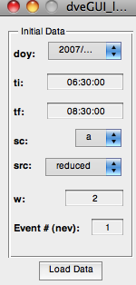

function varargout = dveGUI_load_data(varargin)
gui_Singleton = 1;
gui_State = struct('gui_Name', mfilename, ...
'gui_Singleton', gui_Singleton, ...
'gui_OpeningFcn', @dveGUI_load_data_OpeningFcn, ...
'gui_OutputFcn', @dveGUI_load_data_OutputFcn, ...
'gui_LayoutFcn', [] , ...
'gui_Callback', []);
if nargin && ischar(varargin{1})
gui_State.gui_Callback = str2func(varargin{1});
end
if nargout
[varargout{1:nargout}] = gui_mainfcn(gui_State, varargin{:});
else
gui_mainfcn(gui_State, varargin{:});
end
function dveGUI_load_data_OpeningFcn(hObject, eventdata, handles, varargin)
handles.output = hObject;
guidata(hObject, handles);
function varargout = dveGUI_load_data_OutputFcn(hObject, eventdata, handles)
varargout{1} = handles.output;
function pm_doy_Callback(hObject, eventdata, handles)
contents = cellstr(get(hObject,'String'));
handles.doy = contents{get(hObject,'Value')};
disp(['handles.doy from callbackFcn= ', handles.doy])
guidata(hObject, handles);
function pm_doy_CreateFcn(hObject, eventdata, handles)
if ispc && isequal(get(hObject,'BackgroundColor'), get(0,'defaultUicontrolBackgroundColor'))
set(hObject,'BackgroundColor','white');
end
contents = cellstr(get(hObject,'String'));
handles.doy = contents{get(hObject,'Value')};
disp(['handles.doy from createFcn= ', handles.doy])
function etxt_ti_Callback(hObject, eventdata, handles)
handles.ti=get(hObject,'String');
disp(['handles.ti from callbackFcn= ',handles.ti])
guidata(hObject, handles);
function etxt_ti_CreateFcn(hObject, eventdata, handles)
if ispc && isequal(get(hObject,'BackgroundColor'), get(0,'defaultUicontrolBackgroundColor'))
set(hObject,'BackgroundColor','white');
end
handles.ti=get(hObject,'String');
disp(['handles.ti from createFcn= ',handles.ti])
function etxt_tf_Callback(hObject, eventdata, handles)
handles.tf=get(hObject,'String');
disp(['handles.tf from callbackFcn= ',handles.tf])
guidata(hObject, handles);
function etxt_tf_CreateFcn(hObject, eventdata, handles)
if ispc && isequal(get(hObject,'BackgroundColor'), get(0,'defaultUicontrolBackgroundColor'))
set(hObject,'BackgroundColor','white');
end
handles.tf=get(hObject,'String');
disp(['handles.tf from createFcn= ',handles.tf])
function pm_sc_Callback(hObject, eventdata, handles)
contents = cellstr(get(hObject,'String'));
handles.sc = contents{get(hObject,'Value')};
guidata(hObject, handles);
disp(['handles.sc from callbackFcn= ',handles.sc])
function pm_sc_CreateFcn(hObject, eventdata, handles)
if ispc && isequal(get(hObject,'BackgroundColor'), get(0,'defaultUicontrolBackgroundColor'))
set(hObject,'BackgroundColor','white');
end
contents = cellstr(get(hObject,'String'));
handles.sc = contents{get(hObject,'Value')};
guidata(hObject, handles);
disp(['handles.sc from createFcn= ',handles.sc])
function pm_src_Callback(hObject, eventdata, handles)
contents = cellstr(get(hObject,'String'));
handles.src = contents{get(hObject,'Value')};
guidata(hObject, handles);
disp(['handles.src from callbackFcn= ',handles.src])
function pm_src_CreateFcn(hObject, eventdata, handles)
if ispc && isequal(get(hObject,'BackgroundColor'), get(0,'defaultUicontrolBackgroundColor'))
set(hObject,'BackgroundColor','white');
end
contents = cellstr(get(hObject,'String'));
handles.src = contents{get(hObject,'Value')};
guidata(hObject, handles);
disp(['handles.src from createFcn= ',handles.src])
function etxt_nev_Callback(hObject, eventdata, handles)
handles.nev=str2double(get(hObject,'String'));
disp(['handles.nev from callbackFcn= ',num2str(handles.nev)])
guidata(hObject, handles);
function etxt_nev_CreateFcn(hObject, eventdata, handles)
if ispc && isequal(get(hObject,'BackgroundColor'), get(0,'defaultUicontrolBackgroundColor'))
set(hObject,'BackgroundColor','white');
end
handles.nev=str2double(get(hObject,'String'));
disp(['handles.nev from CreateFcn= ',num2str(handles.nev)])
guidata(hObject, handles);
function etxt_w_Callback(hObject, eventdata, handles)
handles.w=str2double(get(hObject,'String'));
disp(['handles.w from callbackFcn= ',num2str(handles.w)])
guidata(hObject, handles);
function etxt_w_CreateFcn(hObject, eventdata, handles)
if ispc && isequal(get(hObject,'BackgroundColor'), get(0,'defaultUicontrolBackgroundColor'))
set(hObject,'BackgroundColor','white');
end
handles.w=str2double(get(hObject,'String'));
disp(['handles.w from CreateFcn= ',num2str(handles.w)])
guidata(hObject, handles);
function btn_load_Callback(hObject, eventdata, handles)
guidata(hObject, handles);
handles.dhead=1;
handles.tcf = 24*3600.;
handles.yr = sscanf(handles.doy,'%4c%*6c',2);
handles.month = sscanf(handles.doy, '%*5c%2c%*3c',2);
handles.day = sscanf(handles.doy, '%*8c%2c',2);
HHi = sscanf(handles.ti,'%2c%0.2*4c');
MMi = sscanf(handles.ti, '%*3c%2c0%*2c', 2);
SSi = sscanf(handles.ti, '%*6c%2c0', 2);
HHf = sscanf(handles.tf,'%2c%0.2*4c');
MMf = sscanf(handles.tf, '%*3c%2c0%*2c', 2);
SSf = sscanf(handles.tf, '%*6c%2c0', 2);
fn = ['th',handles.sc,'_',num2str(strcat(handles.yr,handles.month,handles.day)),'_',num2str(strcat(HHi,MMi)),'_',num2str(strcat(HHf,MMf)),'_GSM_v4_',handles.src,'.dat'];
handles.a = importdata(fn,' ',handles.dhead);
disp(['handles.a is loaded. Class(handles.a.data) = ',class(handles.a.data)])
disp([' Size(handles.a.data) = ', num2str(size(handles.a.data))])
handles.n=113;
fnsh=['/FTE/2011/findings/themis_fte_iaga_2011_msheath.txt'];
mshfid = fopen(fnsh);
handles.msh = textscan(mshfid, '%s %s %s %s %f %s %s %f %f %f %f %f %f %f %f %f %f %f %f %f %f %f %f %f %f %f %f %f %f %f %f %f %f %f %f %f %f %f %f %f %f %f', handles.n);
fclose(mshfid);
disp(['handles.msh is loaded. Class(handles.msh.data) = ',class(handles.msh)])
disp([' Size(handles.msh.data) = ', num2str(size(handles.msh))])
ff='/FTE/2011/findings/themis_fte_iaga_2011_clean_final_timeorder_recons.txt';
fid = fopen(ff);
handles.f = textscan(fid, '%2c %s %s %s %f %s %s %f %f %f', handles.n);
fclose(fid);
disp(['handles.f is loaded. Class(handles.f.data) = ',class(handles.f)])
disp([' Size(handles.f.data) = ', num2str(size(handles.f))])
handles.nden=1e6;
handles.nt =1e6;
handles.nv =1e3;
handles.nb =1e-9;
handles.kb =1.38*1e-23;
handles.kb2 = 8.61739*1e-5;
handles.miu =4.0*pi*1e-7;
handles.mp =1.67*1e-27;
msh_vx = handles.msh{13}(handles.nev);
msh_vy = handles.msh{14}(handles.nev);
msh_vz = handles.msh{15}(handles.nev);
msh_v = [msh_vx,msh_vy,msh_vz];
disp(['msh_vx=',num2str(msh_vx)]);
disp(['msh_vy=',num2str(msh_vy)]);
disp(['msh_vz=',num2str(msh_vz)]);
handles.V0=msh_v;
nV0=handles.V0/norm(handles.V0);
handles.xs = -nV0;
disp(['h.xs= ',num2str(handles.xs)]);
disp(['h.V0= ',num2str(handles.V0)]);
BX=handles.a.data(:,2);
BY=handles.a.data(:,3);
BZ=handles.a.data(:,4);
VX=handles.a.data(:,6);
VY=handles.a.data(:,7);
VZ=handles.a.data(:,8);
Nx=handles.a.data(:,10);
Tx=handles.a.data(:,11);
idata=1:length(BX);
sdoy = strcat(num2str(handles.yr),'-',num2str(handles.month),'-',num2str(handles.day));
tstart = strcat(sdoy,'/',handles.ti);
tstop = strcat(sdoy,'/',handles.tf);
tsi = datestr(tstart, 'mmmm/dd/yyyy HH:MM:SS:FFF');
tsf = datestr(tstop, 'mmmm/dd/yyyy HH:MM:SS:FFF');
vtsi = datevec(tsi, 'mmmm/dd/yyyy HH:MM:SS:FFF');
vtsf = datevec(tsf, 'mmmm/dd/yyyy HH:MM:SS:FFF');
dni = datenum(vtsi);
dnf = datenum(vtsf);
t1 = handles.f{2}(handles.nev);
t2 = handles.f{4}(handles.nev);
fvts1 = datevec(t1, 'yyyy-mm-dd/HH:MM:SS');
fvts2 = datevec(t2, 'yyyy-mm-dd/HH:MM:SS');
fdn1 = datenum(fvts1);
fdn2 = datenum(fvts2);
t1f1 = etime(fvts1,vtsi);
t1f2 = etime(fvts2,vtsi);
tstep = handles.a.data(:,1);
j = tstep >= t1f1 & tstep < t1f2;
k = find(j);
ns1 = k(1)-handles.w;
ns2 = k(end) + handles.w;
i1 = ns1;
i2 = ns2;
handles.bc=[BX(i1:i2) BY(i1:i2) BZ(i1:i2)];
handles.vp=[VX(i1:i2) VY(i1:i2) VZ(i1:i2)];
handles.Nx = Nx;
handles.Tx = Tx;
handles.lenb = length(handles.bc(:,1));
lenb = handles.lenb;
[EHT,EC,HTR,HTslope,vht]=HTcoef(handles.bc,handles.vp,lenb);
[Kbmax,Kbint,Kbmin,qmva,d1,d2,d3]=MVAB(handles.bc,lenb);
xtemp = -Kbint;
ytemp = Kbmax;
ztemp = Kbmin;
nxorig=ztemp(1);
nyorig=ztemp(2);
nzorig=ztemp(3);
handles.mvab_theta=acosd(nzorig);
handles.mvab_phi=atand(nyorig/nxorig);
if (nxorig < 0.0) && (nyorig >= 0.0);
handles.mvab_phi=-handles.mvab_phi+pi;
end
if (nxorig < 0.0) && (nyorig < 0.0);
handles.mvab_phi= handles.mvab_phi+pi;
end
if (nxorig >= 0.0) && (nyorig < 0.0);
handles.mvab_phi=-handles.mvab_phi+pi*2.;
end
disp(['handles.mvab_phi=',num2str(handles.mvab_phi)])
disp(['handles.mvab_theta=',num2str(handles.mvab_theta)])
handles.mvab_theta=acosd(ztemp);
handles.mvab_phi=atand(ytemp/xtemp);
dveGUI_controller(handles)
